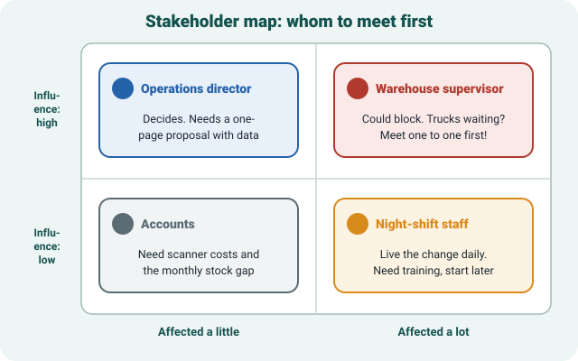

K2 · Speaking and writing clearly › Level 4 Proficient
Persuade and negotiate without a management title
This lesson completes Sheet 3: Stakeholder map and one-page proposal. Print template. It builds on Propose a small improvement (Level 3).
1. Objectives
- Map the stakeholders: who decides, who is affected, what each person gains and loses.
- Write a one-page proposal: data, two options, risks, one concrete request.
2. Retrieval warm-up
- How much information do easy-to-reverse and hard-to-reverse decisions need?
- When you present a decision, which three parts should you separate?
Answers
- Easy to reverse: decide fast, test small. Hard to reverse: more data, an approver, a fallback.
- What you know, what you assume, what you do not know.
Review: Decide with incomplete information.
3. Explanation
Seniors often see problems before others do. But you cannot give orders. To make change happen, you have to persuade.
Influence without a title comes from three sources: trusted expertise, good relationships, and proposals that benefit the listener.
Step 1. Map the stakeholders. List who decides, who is affected, and who could block. For each person, note what they care about, what they gain and what they lose.
Step 2. Meet people one to one before the meeting. Ask the most affected people for their views. Change the proposal based on real feedback. Do not let them hear it for the first time in a meeting.
Step 3. Write a one-page proposal. The problem with data. Two options, each with cost and risk. Your recommendation and why. One concrete request: who needs to decide what, by which date.

Negotiate on interests. A position is what someone demands, such as "no new software". An interest is the reason behind it, such as "I'm worried the night shift will get confused". Ask: "What worries you most?" The solution usually lies in the interests, not the positions.
Sheet 3. One-page proposal
- ProblemOne sentence, with data and a time period.
- Two optionsCost, benefit and risk of each.
- Recommendation and reasonLinked to what the decision-maker cares about.
- Whom you consultedWhat they said, what you changed.
- Concrete requestWho decides what, by which date.
Persuading is not pushing. If you listen and realise you are wrong, change your proposal. That is why people trust you.
4. Workplace example
Hypothetical scenario. Linh is a senior planner at a consumer goods distributor. Each month, the warehouse stock count is off by about 2% of stock value. She wants to switch to barcode scanning for goods in and out.
She does not manage the warehouse. She maps the stakeholders. The operations director decides. The warehouse supervisor is the most affected. Accounts care about cost.
She meets the warehouse supervisor first. He says: "Scanning is slow. The night shift won't load the trucks in time." That is a position. She asks what worries him most. The real interest: delivery trucks must not wait.
She changes the proposal. Test scanning on the day shift first, for 4 weeks. The night shift starts once people are used to it. She measures truck loading time with both methods.
The one-page proposal has: a 2% monthly gap, two options, the cost of scanners, the risk of slow trucks. Request: the director approves a 4-week test before the 30th.
The director approves. The warehouse supervisor explains the change to his own team.
Why this works: she finds the interest behind the position. The most affected person gives feedback first. The final request names a person, a task and a deadline.
5. Practice
Hypothetical scenario. You are a senior quality engineer at a food factory. You want to move machine cleaning from the weekend to the end of every shift, to cut microbial defects. The production supervisor objects because he fears lower output.
Map 3–4 stakeholders. Find the interest behind the supervisor's position. Write a concrete request for the end of your proposal.
Hint 1
Which measure is the supervisor judged on? Do microbial defects damage that measure?
Hint 2
Is there a small test that shows the supervisor the real output, instead of guessing?
Model answer
- Stakeholders: factory manager (decides); production supervisor (affected, could block).
- Others: cleaning team (extra work); sales team (worried about customer returns).
- Supervisor's position: "Don't change the schedule." Interest: keep shift output and avoid a poor review.
- Common ground: batches scrapped for microbial defects also cut good output.
- Proposal: test 15 minutes of cleaning at the end of each shift on one line for 3 weeks. Measure good output and defective batches.
- Concrete request: the factory manager approves the test by Friday. The supervisor chooses the test line.
(The figures are hypothetical.)
6. Self-check
Choose an answer. Every option has an explanation.
Question 1. A colleague says: "I don't agree with the new report template." Which question helps you find the interest behind the position?
-
Not quite. This attacks the person and makes them defensive. It does not reveal what worries them.
-
Correct. Correct. An open question reveals the real reason, where a shared solution usually lies.
-
Not quite. Leaning on someone else's authority may work today, but you lose real support.
Question 2. Who should hear your proposal before the meeting?
-
Not quite. Affected people who hear it first in a meeting often object to protect themselves.
-
Correct. Correct. Their feedback improves the proposal, and they are more likely to support it.
-
Not quite. The decision-maker matters, but affected people can make the change fail in practice.
Question 3. What should the last part of a one-page proposal be?
-
Not quite. Without a concrete request, a proposal is easily left on the shelf.
-
Not quite. A long list dilutes the message. The decision-maker needs to know what to do.
-
Correct. Correct. A concrete request turns the proposal into a task with an owner and a deadline.
Question 4. While collecting feedback, you realise your proposal has a major flaw. What should you do?
-
Correct. Correct. Changing your mind in the face of evidence makes your expertise more credible.
-
Not quite. A flawed proposal that gets approved causes harm and damages your reputation long term.
-
Not quite. Hiding a known weakness is dishonest, and the risk is still there.
7. Reflection
- The last time a proposal of yours was not approved, had you met anyone one to one first?
- What "position" do you often hear at work? What interest might be behind it?
8. Real-world application
In the next 7 days, choose a change you want to propose. Complete Sheet 3. Meet at least one of the most affected people before you present it.
9. Metadata
| skill | K2 · Speaking and writing clearly |
|---|---|
| level | Level 4 · Proficient |
| group | N4 |
| framework_map | WEF: Leadership and social influence; CSfW: 2a Communicate for work; 2b Connect and work with others; SkillsFuture CCS: Communication; Influence; NACE: Communication; Leadership; LifeComp: S3 Collaboration (reference only) |
| original | Vietnamese version |
| updated | 2026-11-14 |
Finish the lesson
Mark it as done and the site suggests reviews after 1, 3 and 7 days. The data stays on your device only.
Suggested reviews: